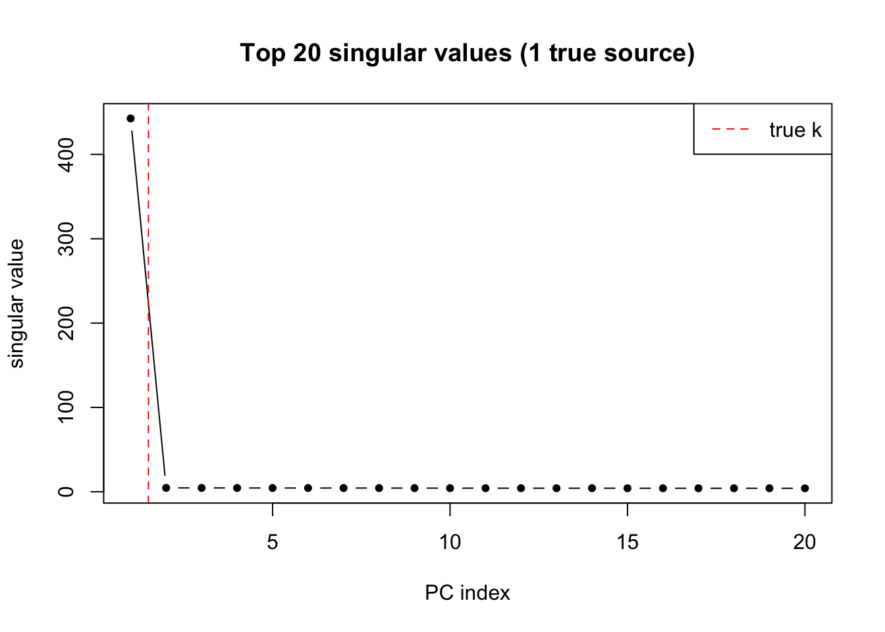
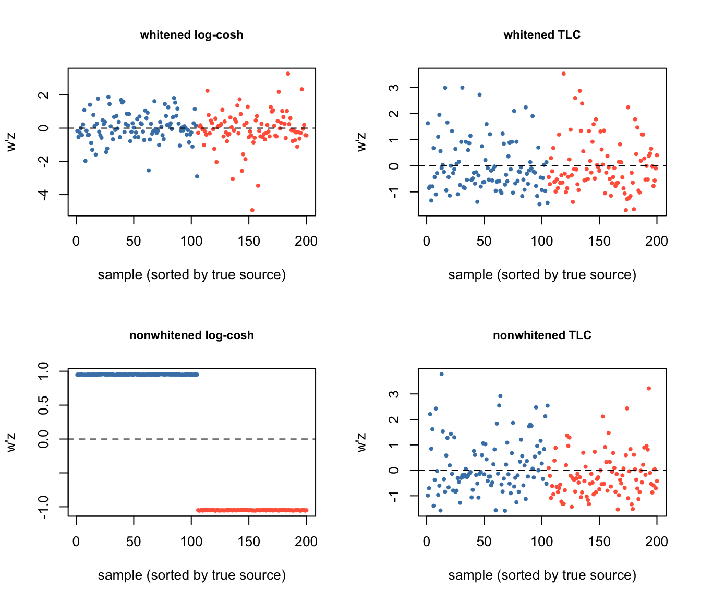
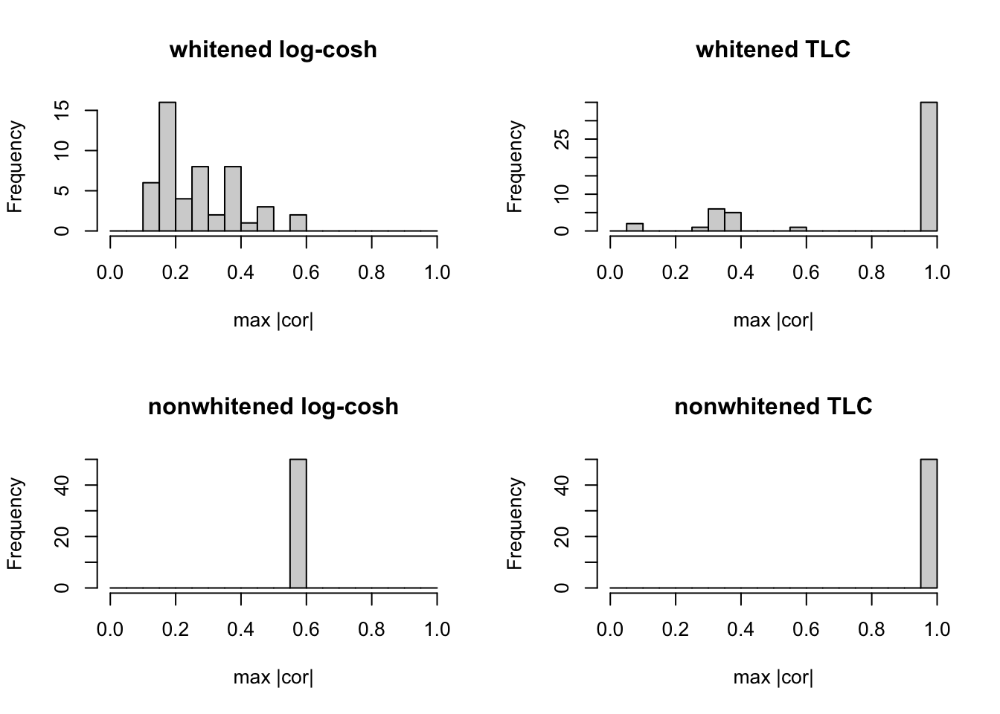
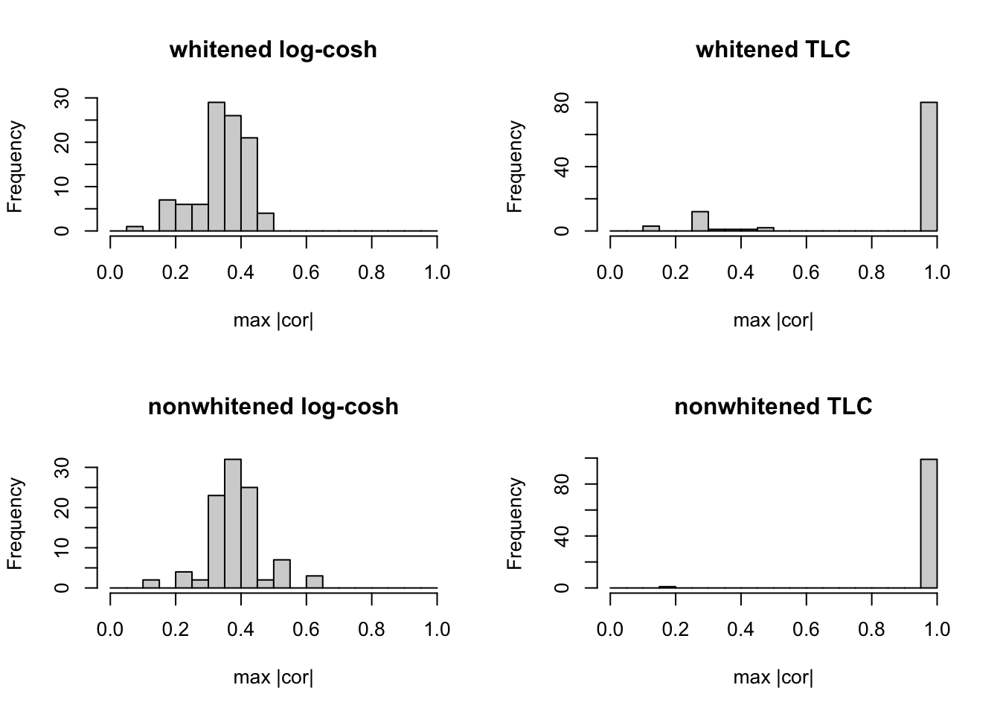
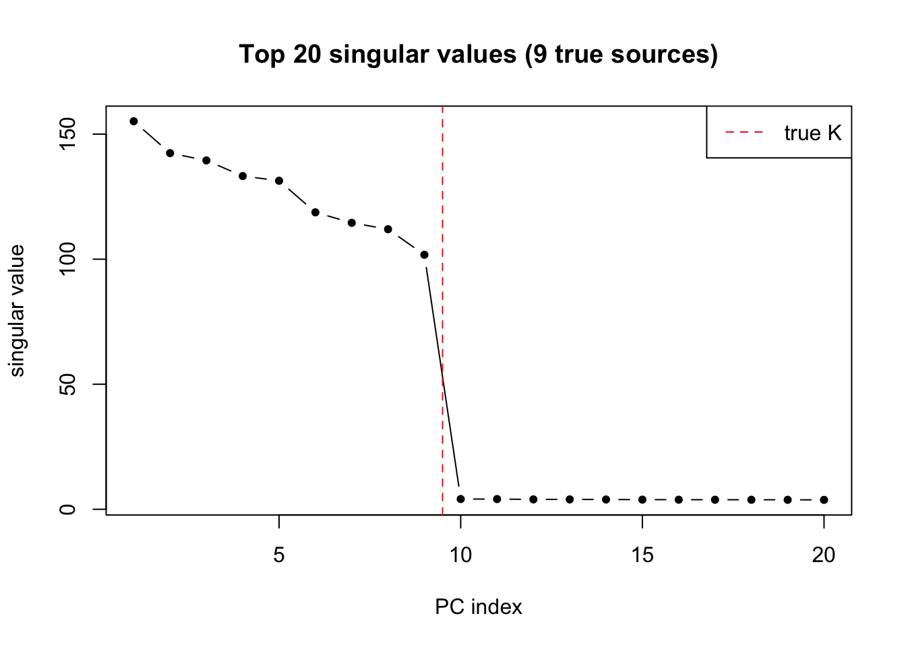
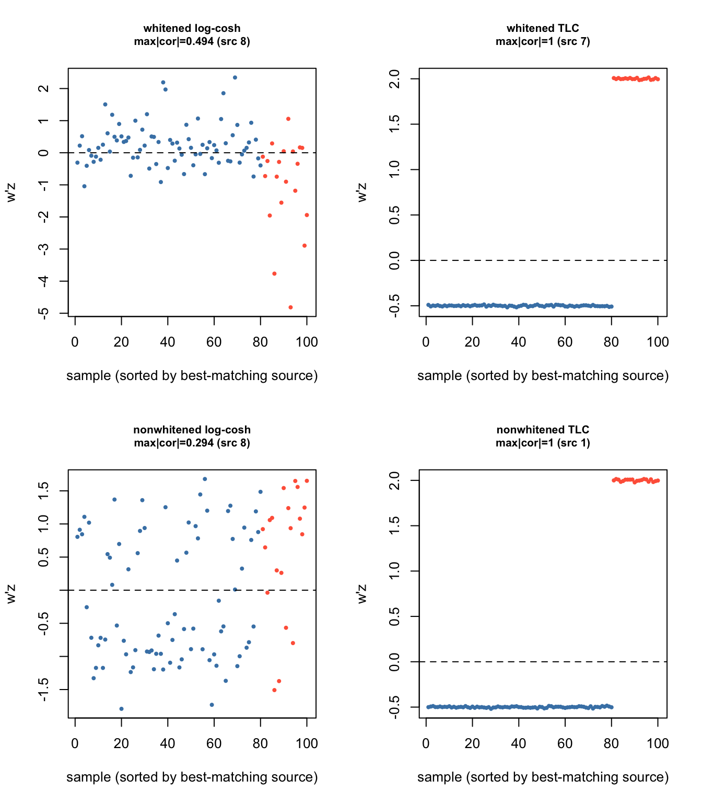
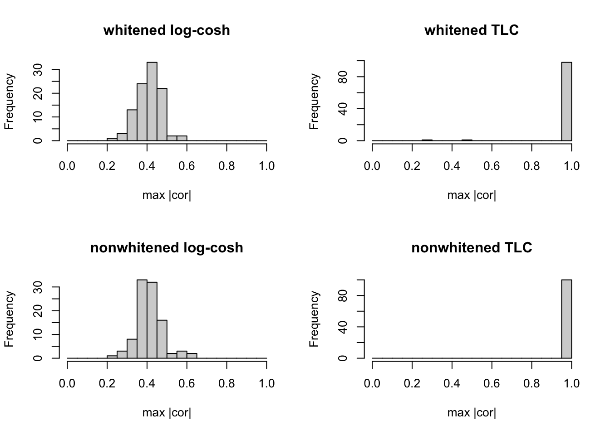
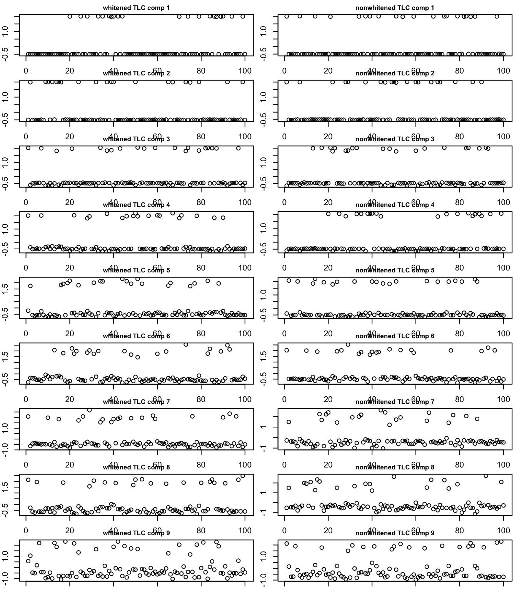

Last updated: 2026-07-16
Checks: 7 0
Knit directory: misc/analysis/
This reproducible R Markdown analysis was created with workflowr (version 1.7.2). The Checks tab describes the reproducibility checks that were applied when the results were created. The Past versions tab lists the development history.
Great! Since the R Markdown file has been committed to the Git repository, you know the exact version of the code that produced these results.
Great job! The global environment was empty. Objects defined in the global environment can affect the analysis in your R Markdown file in unknown ways. For reproduciblity it’s best to always run the code in an empty environment.
The command set.seed(1) was run prior to running the code in the R Markdown file. Setting a seed ensures that any results that rely on randomness, e.g. subsampling or permutations, are reproducible.
Great job! Recording the operating system, R version, and package versions is critical for reproducibility.
Nice! There were no cached chunks for this analysis, so you can be confident that you successfully produced the results during this run.
Great job! Using relative paths to the files within your workflowr project makes it easier to run your code on other machines.
Great! You are using Git for version control. Tracking code development and connecting the code version to the results is critical for reproducibility.
The results in this page were generated with repository version c9c23dd. See the Past versions tab to see a history of the changes made to the R Markdown and HTML files.
Note that you need to be careful to ensure that all relevant files for the analysis have been committed to Git prior to generating the results (you can use wflow_publish or wflow_git_commit). workflowr only checks the R Markdown file, but you know if there are other scripts or data files that it depends on. Below is the status of the Git repository when the results were generated:
Ignored files:
Ignored: .DS_Store
Ignored: .Rhistory
Ignored: .Rproj.user/
Ignored: .claude/
Ignored: GSE87571/
Ignored: analysis/.RData
Ignored: analysis/.Rhistory
Ignored: analysis/ALStruct_cache/
Ignored: data/.Rhistory
Ignored: data/methylation-data-for-matthew.rds
Ignored: data/pbmc/
Ignored: data/pbmc_purified.RData
Untracked files:
Untracked: .dropbox
Untracked: GSE41037/
Untracked: Icon
Untracked: analysis/GHstan.Rmd
Untracked: analysis/GTEX-cogaps.Rmd
Untracked: analysis/PACS.Rmd
Untracked: analysis/Rplot.png
Untracked: analysis/SPCAvRP.rmd
Untracked: analysis/abf_comparisons.Rmd
Untracked: analysis/admm_02.Rmd
Untracked: analysis/admm_03.Rmd
Untracked: analysis/bispca.Rmd
Untracked: analysis/cache/
Untracked: analysis/cholesky.Rmd
Untracked: analysis/compare-transformed-models.Rmd
Untracked: analysis/cormotif.Rmd
Untracked: analysis/cp_ash.Rmd
Untracked: analysis/eQTL.perm.rand.pdf
Untracked: analysis/eb_power2.Rmd
Untracked: analysis/eb_prepilot.Rmd
Untracked: analysis/eb_var.Rmd
Untracked: analysis/ebpmf1.Rmd
Untracked: analysis/ebpmf_sla_text.Rmd
Untracked: analysis/ebspca_sims.Rmd
Untracked: analysis/explore_psvd.Rmd
Untracked: analysis/fa_check_identify.Rmd
Untracked: analysis/fa_iterative.Rmd
Untracked: analysis/fastica_heated.Rmd
Untracked: analysis/fastica_unwhitened.Rmd
Untracked: analysis/flash_cov_overlapping_groups_init.Rmd
Untracked: analysis/flash_test_tree.Rmd
Untracked: analysis/flashier_newgroups.Rmd
Untracked: analysis/flashier_nmf_triples.Rmd
Untracked: analysis/flashier_pbmc.Rmd
Untracked: analysis/flashier_snn_shifted_prior.Rmd
Untracked: analysis/greedy_ebpmf_exploration_00.Rmd
Untracked: analysis/ieQTL.perm.rand.pdf
Untracked: analysis/lasso_em_03.Rmd
Untracked: analysis/m6amash.Rmd
Untracked: analysis/mash_bhat_z.Rmd
Untracked: analysis/mash_ieqtl_permutations.Rmd
Untracked: analysis/matrix_beta.Rmd
Untracked: analysis/meth_flash_01.Rmd
Untracked: analysis/methylation_example.Rmd
Untracked: analysis/mixsqp.Rmd
Untracked: analysis/mr.ash_lasso_init.Rmd
Untracked: analysis/mr.mash.test.Rmd
Untracked: analysis/mr_ash_modular.Rmd
Untracked: analysis/mr_ash_parameterization.Rmd
Untracked: analysis/mr_ash_ridge.Rmd
Untracked: analysis/mv_gaussian_message_passing.Rmd
Untracked: analysis/nejm.Rmd
Untracked: analysis/nmf_bg.Rmd
Untracked: analysis/nonneg_underapprox.Rmd
Untracked: analysis/normal_conditional_on_r2.Rmd
Untracked: analysis/normalize.Rmd
Untracked: analysis/pbmc.Rmd
Untracked: analysis/pca_binary_weighted.Rmd
Untracked: analysis/pca_l1.Rmd
Untracked: analysis/poisson_nmf_approx.Rmd
Untracked: analysis/poisson_shrink.Rmd
Untracked: analysis/poisson_transform.Rmd
Untracked: analysis/qrnotes.txt
Untracked: analysis/ridge_iterative_02.Rmd
Untracked: analysis/ridge_iterative_splitting.Rmd
Untracked: analysis/samps/
Untracked: analysis/sc_bimodal.Rmd
Untracked: analysis/shrinkage_comparisons_changepoints.Rmd
Untracked: analysis/susie_cov.Rmd
Untracked: analysis/susie_en.Rmd
Untracked: analysis/susie_z_investigate.Rmd
Untracked: analysis/svd-timing.Rmd
Untracked: analysis/temp.RDS
Untracked: analysis/temp.Rmd
Untracked: analysis/test-figure/
Untracked: analysis/test.Rmd
Untracked: analysis/test.Rpres
Untracked: analysis/test.md
Untracked: analysis/test_qr.R
Untracked: analysis/test_sparse.Rmd
Untracked: analysis/tree_dist_top_eigenvector.Rmd
Untracked: analysis/z.txt
Untracked: code/coordinate_descent_symNMF.R
Untracked: code/multivariate_testfuncs.R
Untracked: code/rqb.hacked.R
Untracked: data/4matthew/
Untracked: data/4matthew2/
Untracked: data/E-MTAB-2805.processed.1/
Untracked: data/ENSG00000156738.Sim_Y2.RDS
Untracked: data/GDS5363_full.soft.gz
Untracked: data/GSE41265_allGenesTPM.txt
Untracked: data/Muscle_Skeletal.ACTN3.pm1Mb.RDS
Untracked: data/P.rds
Untracked: data/Thyroid.FMO2.pm1Mb.RDS
Untracked: data/bmass.HaemgenRBC2016.MAF01.Vs2.MergedDataSources.200kRanSubset.ChrBPMAFMarkerZScores.vs1.txt.gz
Untracked: data/bmass.HaemgenRBC2016.Vs2.NewSNPs.ZScores.hclust.vs1.txt
Untracked: data/bmass.HaemgenRBC2016.Vs2.PreviousSNPs.ZScores.hclust.vs1.txt
Untracked: data/eb_prepilot/
Untracked: data/finemap_data/fmo2.sim/b.txt
Untracked: data/finemap_data/fmo2.sim/dap_out.txt
Untracked: data/finemap_data/fmo2.sim/dap_out2.txt
Untracked: data/finemap_data/fmo2.sim/dap_out2_snp.txt
Untracked: data/finemap_data/fmo2.sim/dap_out_snp.txt
Untracked: data/finemap_data/fmo2.sim/data
Untracked: data/finemap_data/fmo2.sim/fmo2.sim.config
Untracked: data/finemap_data/fmo2.sim/fmo2.sim.k
Untracked: data/finemap_data/fmo2.sim/fmo2.sim.k4.config
Untracked: data/finemap_data/fmo2.sim/fmo2.sim.k4.snp
Untracked: data/finemap_data/fmo2.sim/fmo2.sim.ld
Untracked: data/finemap_data/fmo2.sim/fmo2.sim.snp
Untracked: data/finemap_data/fmo2.sim/fmo2.sim.z
Untracked: data/finemap_data/fmo2.sim/pos.txt
Untracked: data/logm.csv
Untracked: data/m.cd.RDS
Untracked: data/m.cdu.old.RDS
Untracked: data/m.new.cd.RDS
Untracked: data/m.old.cd.RDS
Untracked: data/mainbib.bib.old
Untracked: data/mat.csv
Untracked: data/mat.txt
Untracked: data/mat_new.csv
Untracked: data/matrix_lik.rds
Untracked: data/paintor_data/
Untracked: data/running_data_chris.csv
Untracked: data/running_data_matthew.csv
Untracked: data/temp.txt
Untracked: data/y.txt
Untracked: data/y_f.txt
Untracked: data/zscore_jointLCLs_m6AQTLs_susie_eQTLpruned.rds
Untracked: data/zscore_jointLCLs_random.rds
Untracked: explore_udi.R
Untracked: output/fit.k10.rds
Untracked: output/fit.nn.pbmc.purified.rds
Untracked: output/fit.nn.rds
Untracked: output/fit.nn.s.001.rds
Untracked: output/fit.nn.s.01.rds
Untracked: output/fit.nn.s.1.rds
Untracked: output/fit.nn.s.10.rds
Untracked: output/fit.snn.s.001.rds
Untracked: output/fit.snn.s.01.nninit.rds
Untracked: output/fit.snn.s.01.rds
Untracked: output/fit.varbvs.RDS
Untracked: output/fit2.nn.pbmc.purified.rds
Untracked: output/glmnet.fit.RDS
Untracked: output/snn07.txt
Untracked: output/snn34.txt
Untracked: output/test.bv.txt
Untracked: output/test.gamma.txt
Untracked: output/test.hyp.txt
Untracked: output/test.log.txt
Untracked: output/test.param.txt
Untracked: output/test2.bv.txt
Untracked: output/test2.gamma.txt
Untracked: output/test2.hyp.txt
Untracked: output/test2.log.txt
Untracked: output/test2.param.txt
Untracked: output/test3.bv.txt
Untracked: output/test3.gamma.txt
Untracked: output/test3.hyp.txt
Untracked: output/test3.log.txt
Untracked: output/test3.param.txt
Untracked: output/test4.bv.txt
Untracked: output/test4.gamma.txt
Untracked: output/test4.hyp.txt
Untracked: output/test4.log.txt
Untracked: output/test4.param.txt
Untracked: output/test5.bv.txt
Untracked: output/test5.gamma.txt
Untracked: output/test5.hyp.txt
Untracked: output/test5.log.txt
Untracked: output/test5.param.txt
Unstaged changes:
Modified: .gitignore
Modified: analysis/eb_snmu.Rmd
Modified: analysis/ebnm_binormal.Rmd
Modified: analysis/ebpower.Rmd
Modified: analysis/flashier_log1p.Rmd
Modified: analysis/flashier_sla_text.Rmd
Modified: analysis/logistic_z_scores.Rmd
Modified: analysis/mr_ash_pen.Rmd
Modified: analysis/nmu_em.Rmd
Modified: analysis/susie_flash.Rmd
Modified: analysis/tap_free_energy.Rmd
Modified: misc.Rproj
Note that any generated files, e.g. HTML, png, CSS, etc., are not included in this status report because it is ok for generated content to have uncommitted changes.
These are the previous versions of the repository in which changes were made to the R Markdown (analysis/fastica_nonwhitened.Rmd) and HTML (docs/fastica_nonwhitened.html) files. If you’ve configured a remote Git repository (see ?wflow_git_remote), click on the hyperlinks in the table below to view the files as they were in that past version.
| File | Version | Author | Date | Message |
|---|---|---|---|---|
| Rmd | c9c23dd | Matthew Stephens | 2026-07-16 | Correct Newton update, rewrite introduction for exact equivariance |
| Rmd | 3341f07 | Matthew Stephens | 2026-07-16 | Add fastica_nonwhitened.Rmd: FastICA for non-whitened data |
| html | 3341f07 | Matthew Stephens | 2026-07-16 | Add fastica_nonwhitened.Rmd: FastICA for non-whitened data |
Given \(X\) (\(p \times n\)) with thin SVD \(X = UDV'\), standard FastICA pre-whitens by setting \(Z_{\text{wh}} = \sqrt{n}\,V'\) (\(k \times n\)), so that the sample covariance \(E[zz'] = I_k\). It maximises \(E[G(w'z)]\) subject to \(\|w\|^2 = 1\) (equivalently \(E[(w'z)^2] = 1\)). Because the covariance is the identity, the Newton fixed-point update requires no matrix inversion: \[w \leftarrow E[z\,g(w'z)] - E[g'(w'z)]\,w, \qquad w \leftarrow w/\|w\|.\]
We instead work with \[Z = DV' \quad (k \times n), \qquad
C = E[zz'] = \tfrac{1}{n}D^2.\] The scale-free constraint is \(E[(w'z)^2] = 1\), i.e. \(w'Cw = 1\), i.e.
\(w'D^2w = n\). The Newton update for a constrained problem with non-identity covariance requires left-multiplying the gradient by \(C^{-1} = nD^{-2}\): \[w \leftarrow C^{-1}E[z\,g(w'z)] - E[g'(w'z)]\,w
= nD^{-2}E[z\,g(w'z)] - E[g'(w'z)]\,w, \qquad
w \leftarrow w\sqrt{n}/\sqrt{w'D^2 w}.\] In code, since \(Z\mathbf{g}/n = E[zg(w'z)]\), the term \(nD^{-2}E[zg]\) is computed as (Z %*% G) / diag(D2) (elementwise division by \(d_i^2\)).
The two algorithms are exactly equivariant under the linear map \[w_{\text{wh}} = C^{1/2}w = \tfrac{1}{\sqrt{n}}Dw, \qquad w_{\text{nw}} = C^{-1/2}w_{\text{wh}} = \sqrt{n}D^{-1}w_{\text{wh}},\] which preserves projections: \(w_{\text{wh}}'z_{\text{wh}} = w_{\text{nw}}'z_{\text{nw}}\).
Proof. Substitute \(z_{\text{wh}} = C^{-1/2}z = \sqrt{n}D^{-1}z\) and \(w_{\text{wh}} = C^{1/2}w_{\text{nw}} = \tfrac{D}{\sqrt{n}}w_{\text{nw}}\) into the whitened update: \[\tfrac{D}{\sqrt{n}}\,w^+ = E\!\left[\sqrt{n}D^{-1}z\cdot g(w'z)\right] - E[g']\,\tfrac{D}{\sqrt{n}}w = \sqrt{n}D^{-1}E[zg(w'z)] - E[g']\tfrac{D}{\sqrt{n}}w.\] Left-multiplying by \(\tfrac{\sqrt{n}}{D} = \sqrt{n}D^{-1}\) recovers exactly the non-whitened update: \[w^+ = nD^{-2}E[zg(w'z)] - E[g']\,w. \qquad \checkmark\] The normalisation steps also correspond: \(\|w_{\text{wh}}\|=1 \Leftrightarrow w_{\text{nw}}'D^2w_{\text{nw}} = n\). Therefore the two iterations trace identical trajectories at every step, and have the same fixed points with the same stability.
The dynamics are identical given corresponding initialisations, but a random \(w_{\text{nw}}\) does not correspond to a random \(w_{\text{wh}}\). From a random \(w_{\text{nw}}\), the equivalent whitened start is \[w_{\text{wh}} \propto \tfrac{D}{\sqrt{n}}w_{\text{nw}},\] which is biased toward large-\(d_i\) (signal) directions. Whitened FastICA starts from a uniformly random direction on the \(k\)-sphere, giving only a \(\sim k_{\text{true}}/k\) chance of landing near the signal subspace.
In other words: the non-whitened parameterisation gives every random start an implicit warm start toward the signal, without changing the algorithm’s fixed-point structure at all.
In practice we do not know how many independent components are present. Standard whitening requires a hard choice of \(k\): too small and we miss components, too large and we include pure-noise PCs. Whitening places all \(k\) PCs on equal footing, so inflating \(k\) adds pure-noise directions that are equally likely starting points for the iteration.
The non-whitened parameterisation’s random initialisation is naturally biased toward high-variance (signal) PCs, so extra noise PCs cause much less harm. We test this by using \(k = 20\) PCs throughout, even when the true number of sources is 1, 4, or 9.
# ---- whitened helpers (for comparison) ----
fastica_r1update = function(X, w) {
w = w / sqrt(sum(w^2))
P = t(X) %*% w
G = tanh(P)
G2 = 1 - tanh(P)^2
w = X %*% G - mean(G2) * ncol(X) * w
w / sqrt(sum(w^2))
}
fastica_r1update_tlc = function(X, w, lambda = 1) {
w = w / sqrt(sum(w^2))
P = t(X) %*% w
G = tanh(P) + 2 * lambda * abs(P)
G2 = 1 - tanh(P)^2 + 2 * lambda * sign(P)
w = X %*% G - mean(G2) * ncol(X) * w
w / sqrt(sum(w^2))
}
compute_objective = function(X, w) mean(log(cosh(t(X) %*% w)))
compute_objective_tlc = function(X, w, lambda = 1) {
P = t(X) %*% w
mean(log(cosh(P)) + lambda * abs(P) * P)
}
prewhiten = function(X, n.comp) {
X = X - rowMeans(X)
sqrt(ncol(X)) * t(svd(X)$v[, 1:n.comp])
}
# ---- non-whitened helpers ----
# Returns list(Z, D2): Z = DV' (k x n), D2 = diag(d^2) (k x k)
preprocess_nonwhitened = function(X, n.comp) {
X = X - rowMeans(X)
sv = svd(X, nu = 0, nv = n.comp)
d = sv$d[1:n.comp]
Z = diag(d, nrow = length(d)) %*% t(sv$v) # k x n
D2 = diag(d^2, nrow = length(d)) # k x k
list(Z = Z, D2 = D2)
}
# Normalize w so that w'D2 w = n
normalize_nw = function(w, D2, n) {
w * sqrt(n) / sqrt(as.numeric(t(w) %*% D2 %*% w))
}
fastica_r1update_nw = function(Z, D2, w) {
n = ncol(Z)
w = normalize_nw(w, D2, n)
P = t(Z) %*% w
G = tanh(P)
G2 = 1 - tanh(P)^2
w = (Z %*% G) / diag(D2) - mean(G2) * w # n * D2^{-1} %*% E[zg] - E[g'] * w
normalize_nw(w, D2, n)
}
fastica_r1update_nw_tlc = function(Z, D2, w, lambda = 1) {
n = ncol(Z)
w = normalize_nw(w, D2, n)
P = t(Z) %*% w
G = tanh(P) + 2 * lambda * abs(P)
G2 = 1 - tanh(P)^2 + 2 * lambda * sign(P)
w = (Z %*% G) / diag(D2) - mean(G2) * w
normalize_nw(w, D2, n)
}
compute_objective_nw = function(Z, D2, w) {
n = ncol(Z)
w = normalize_nw(w, D2, n)
mean(log(cosh(t(Z) %*% w)))
}
compute_objective_nw_tlc = function(Z, D2, w, lambda = 1) {
n = ncol(Z)
w = normalize_nw(w, D2, n)
P = t(Z) %*% w
mean(log(cosh(P)) + lambda * abs(P) * P)
}
# ---- generic runner: works for both whitened and non-whitened ----
# update_fn(data, w, ...) and obj_fn(data, w, ...) where data is a list
# (non-whitened) or a matrix (whitened).
run_seeds = function(data, S_true, update_fn, obj_fn, n_seeds = 50,
n_iter = 200, ...) {
obj = numeric(n_seeds)
maxcor = numeric(n_seeds)
for (seed in seq_len(n_seeds)) {
set.seed(seed)
w = rnorm(nrow(if (is.list(data)) data$Z else data))
for (i in seq_len(n_iter))
w = update_fn(data, w, ...)
obj[seed] = obj_fn(data, w, ...)
proj = if (is.list(data)) t(data$Z) %*% w else t(data) %*% w
maxcor[seed] = max(abs(cor(t(S_true), proj)))
}
list(obj = obj, maxcor = maxcor)
}
# Wrappers so run_seeds gets a single 'data' argument
update_nw = function(data, w, lambda = NULL) {
if (is.null(lambda)) fastica_r1update_nw(data$Z, data$D2, w)
else fastica_r1update_nw_tlc(data$Z, data$D2, w, lambda = lambda)
}
obj_nw = function(data, w, lambda = NULL) {
if (is.null(lambda)) compute_objective_nw(data$Z, data$D2, w)
else compute_objective_nw_tlc(data$Z, data$D2, w, lambda = lambda)
}
k_pca = 20 # number of PCs used for all tests (larger than true k)The data have a single Rademacher source, but we extract k_pca = 20 PCs. Whitening inflates all 20 to unit variance; non-whitening retains the true signal-to-noise contrast in the singular values.
set.seed(10)
n = 200; p = 1000; k_true = 1
A = matrix(rnorm(p * k_true), nrow = p)
S_rad = matrix(sample(c(-1, 1), n, replace = TRUE), nrow = 1)
sigma = 0.1
X_rad = A %*% S_rad + matrix(rnorm(p * n, 0, sigma), nrow = p)
sv_rad = svd(X_rad - rowMeans(X_rad), nu = 0, nv = k_pca)
plot(sv_rad$d[1:k_pca], type = "b", pch = 19, cex = 0.7,
xlab = "PC index", ylab = "singular value",
main = "Top 20 singular values (1 true source)")
abline(v = k_true + 0.5, lty = 2, col = "red")
legend("topright", "true k", lty = 2, col = "red")
| Version | Author | Date |
|---|---|---|
| 3341f07 | Matthew Stephens | 2026-07-16 |
The first singular value is much larger than the rest, which are pure noise. Whitening would equalise all 20; non-whitening keeps this gap intact.
Z_rad = prewhiten(X_rad, k_pca)
nw_rad = preprocess_nonwhitened(X_rad, k_pca)
run_one = function(data, update_fn, obj_fn, seed = 1, n_iter = 200, ...) {
set.seed(seed)
w = rnorm(nrow(if (is.list(data)) data$Z else data))
for (i in seq_len(n_iter))
w = update_fn(data, w, ...)
proj = if (is.list(data)) t(data$Z) %*% w else t(data) %*% w
list(w = w, proj = as.vector(proj), obj = obj_fn(data, w, ...))
}
r_wh_lc = run_one(Z_rad, fastica_r1update, compute_objective)
r_wh_tlc = run_one(Z_rad, fastica_r1update_tlc, compute_objective_tlc, lambda = 1)
r_nw_lc = run_one(nw_rad, update_nw, obj_nw)
r_nw_tlc = run_one(nw_rad, update_nw, obj_nw, lambda = 1)
cat("whitened log-cosh: obj =", round(r_wh_lc$obj, 4),
" max|cor| =", round(max(abs(cor(as.vector(S_rad), r_wh_lc$proj))), 3), "\n")whitened log-cosh: obj = 0.329 max|cor| = 0.069 cat("whitened TLC: obj =", round(r_wh_tlc$obj, 4),
" max|cor| =", round(max(abs(cor(as.vector(S_rad), r_wh_tlc$proj))), 3), "\n")whitened TLC: obj = 0.6942 max|cor| = 0.025 cat("nonwhiten log-cosh: obj =", round(r_nw_lc$obj, 4),
" max|cor| =", round(max(abs(cor(as.vector(S_rad), r_nw_lc$proj))), 3), "\n")nonwhiten log-cosh: obj = 0.4334 max|cor| = 1 cat("nonwhiten TLC: obj =", round(r_nw_tlc$obj, 4),
" max|cor| =", round(max(abs(cor(as.vector(S_rad), r_nw_tlc$proj))), 3), "\n")nonwhiten TLC: obj = 0.6743 max|cor| = 0.201 par(mfrow = c(2, 2))
ord = order(as.vector(S_rad))
col = ifelse(as.vector(S_rad)[ord] == 1, "tomato", "steelblue")
plot_proj = function(proj, title) {
plot(proj[ord], col = col, pch = 19, cex = 0.5,
main = title, xlab = "sample (sorted by true source)", ylab = "w'z",
cex.main = 0.85)
abline(h = 0, lty = 2)
}
plot_proj(r_wh_lc$proj, "whitened log-cosh")
plot_proj(r_wh_tlc$proj, "whitened TLC")
plot_proj(r_nw_lc$proj, "nonwhitened log-cosh")
plot_proj(r_nw_tlc$proj, "nonwhitened TLC")
| Version | Author | Date |
|---|---|---|
| 3341f07 | Matthew Stephens | 2026-07-16 |
par(mfrow = c(1, 1))Samples are sorted by true source value (+1 = red, -1 = blue). A good recovery shows two clearly separated bands.
res_wh_lc = run_seeds(Z_rad, S_rad, fastica_r1update, compute_objective)
res_wh_tlc = run_seeds(Z_rad, S_rad, fastica_r1update_tlc, compute_objective_tlc, lambda = 1)
res_nw_lc = run_seeds(nw_rad, S_rad, update_nw, obj_nw)
res_nw_tlc = run_seeds(nw_rad, S_rad, update_nw, obj_nw, lambda = 1)
cat("whitened log-cosh: mean max|cor| =", round(mean(res_wh_lc$maxcor), 3),
" frac > 0.9:", mean(res_wh_lc$maxcor > 0.9), "\n")whitened log-cosh: mean max|cor| = 0.176 frac > 0.9: 0.06 cat("whitened TLC: mean max|cor| =", round(mean(res_wh_tlc$maxcor), 3),
" frac > 0.9:", mean(res_wh_tlc$maxcor > 0.9), "\n")whitened TLC: mean max|cor| = 0.11 frac > 0.9: 0 cat("nonwhiten log-cosh: mean max|cor| =", round(mean(res_nw_lc$maxcor), 3),
" frac > 0.9:", mean(res_nw_lc$maxcor > 0.9), "\n")nonwhiten log-cosh: mean max|cor| = 0.967 frac > 0.9: 0.96 cat("nonwhiten TLC: mean max|cor| =", round(mean(res_nw_tlc$maxcor), 3),
" frac > 0.9:", mean(res_nw_tlc$maxcor > 0.9), "\n")nonwhiten TLC: mean max|cor| = 0.189 frac > 0.9: 0 set.seed(1)
n = 100; p = 1000; k_true = 4
A = matrix(rnorm(p * k_true), nrow = p)
S = matrix(0, nrow = k_true, ncol = n)
S[1, 1:25] = 1; S[2, 26:50] = 1; S[3, 51:75] = 1; S[4, 76:100] = 1
sigma = 0.1
X = A %*% S + matrix(rnorm(p * n, 0, sigma), nrow = p)
Z = prewhiten(X, k_pca)
nw = preprocess_nonwhitened(X, k_pca)
res_wh_lc = run_seeds(Z, S, fastica_r1update, compute_objective)
res_wh_tlc = run_seeds(Z, S, fastica_r1update_tlc, compute_objective_tlc, lambda = 1)
res_nw_lc = run_seeds(nw, S, update_nw, obj_nw)
res_nw_tlc = run_seeds(nw, S, update_nw, obj_nw, lambda = 1)
par(mfrow = c(2, 2))
hist(res_wh_lc$maxcor, breaks = seq(0, 1, by = 0.05), main = "whitened log-cosh", xlab = "max |cor|")
hist(res_wh_tlc$maxcor, breaks = seq(0, 1, by = 0.05), main = "whitened TLC", xlab = "max |cor|")
hist(res_nw_lc$maxcor, breaks = seq(0, 1, by = 0.05), main = "nonwhitened log-cosh", xlab = "max |cor|")
hist(res_nw_tlc$maxcor, breaks = seq(0, 1, by = 0.05), main = "nonwhitened TLC", xlab = "max |cor|")
| Version | Author | Date |
|---|---|---|
| 3341f07 | Matthew Stephens | 2026-07-16 |
par(mfrow = c(1, 1))set.seed(2)
n = 100; p = 1000; k_true = 4
prob_active = 0.2
A = matrix(rnorm(p * k_true), nrow = p)
S_sparse = matrix(0, nrow = k_true, ncol = n)
for (j in 1:k_true)
S_sparse[j, sample(n, round(prob_active * n))] = 1
sigma = 0.1
X_sp = A %*% S_sparse + matrix(rnorm(p * n, 0, sigma), nrow = p)
Z_sp = prewhiten(X_sp, k_pca)
nw_sp = preprocess_nonwhitened(X_sp, k_pca)
res_wh_lc_sp = run_seeds(Z_sp, S_sparse, fastica_r1update, compute_objective, n_seeds = 100)
res_wh_tlc_sp = run_seeds(Z_sp, S_sparse, fastica_r1update_tlc, compute_objective_tlc, n_seeds = 100, lambda = 1)
res_nw_lc_sp = run_seeds(nw_sp, S_sparse, update_nw, obj_nw, n_seeds = 100)
res_nw_tlc_sp = run_seeds(nw_sp, S_sparse, update_nw, obj_nw, n_seeds = 100, lambda = 1)
cat("whitened log-cosh: mean max|cor| =", round(mean(res_wh_lc_sp$maxcor), 3),
" frac > 0.9:", mean(res_wh_lc_sp$maxcor > 0.9), "\n")whitened log-cosh: mean max|cor| = 0.337 frac > 0.9: 0 cat("whitened TLC: mean max|cor| =", round(mean(res_wh_tlc_sp$maxcor), 3),
" frac > 0.9:", mean(res_wh_tlc_sp$maxcor > 0.9), "\n")whitened TLC: mean max|cor| = 0.856 frac > 0.9: 0.8 cat("nonwhiten log-cosh: mean max|cor| =", round(mean(res_nw_lc_sp$maxcor), 3),
" frac > 0.9:", mean(res_nw_lc_sp$maxcor > 0.9), "\n")nonwhiten log-cosh: mean max|cor| = 0.378 frac > 0.9: 0 cat("nonwhiten TLC: mean max|cor| =", round(mean(res_nw_tlc_sp$maxcor), 3),
" frac > 0.9:", mean(res_nw_tlc_sp$maxcor > 0.9), "\n")nonwhiten TLC: mean max|cor| = 0.992 frac > 0.9: 0.99 par(mfrow = c(2, 2))
hist(res_wh_lc_sp$maxcor, breaks = seq(0, 1, by = 0.05), main = "whitened log-cosh", xlab = "max |cor|")
hist(res_wh_tlc_sp$maxcor, breaks = seq(0, 1, by = 0.05), main = "whitened TLC", xlab = "max |cor|")
hist(res_nw_lc_sp$maxcor, breaks = seq(0, 1, by = 0.05), main = "nonwhitened log-cosh", xlab = "max |cor|")
hist(res_nw_tlc_sp$maxcor, breaks = seq(0, 1, by = 0.05), main = "nonwhitened TLC", xlab = "max |cor|")
par(mfrow = c(1, 1))Single-component extraction over many seeds, same as Tests 1–3. Each seed finds one direction; we report the max |cor| with any of the 9 true sources.
set.seed(1)
n = 100; p = 1000; K = 9
L = matrix(0, nrow = n, ncol = K)
for (i in 1:K) L[sample(n, 20), i] = 1
FF = matrix(rnorm(p * K), nrow = p, ncol = K)
sigma = 0.1
X9 = t(L %*% t(FF) + matrix(rnorm(n * p, 0, sigma), nrow = n))
sv9 = svd(X9 - rowMeans(X9), nu = 0, nv = k_pca)
Z9 = prewhiten(X9, k_pca)
nw9 = preprocess_nonwhitened(X9, k_pca)plot(sv9$d[1:k_pca], type = "b", pch = 19, cex = 0.7,
xlab = "PC index", ylab = "singular value",
main = "Top 20 singular values (9 true sources)")
abline(v = K + 0.5, lty = 2, col = "red")
legend("topright", "true K", lty = 2, col = "red")
r9_wh_lc = run_one(Z9, fastica_r1update, compute_objective)
r9_wh_tlc = run_one(Z9, fastica_r1update_tlc, compute_objective_tlc, lambda = 1)
r9_nw_lc = run_one(nw9, update_nw, obj_nw)
r9_nw_tlc = run_one(nw9, update_nw, obj_nw, lambda = 1)
cor_fmt = function(proj) round(max(abs(cor(L, proj))), 3)
cat("whitened log-cosh: obj =", round(r9_wh_lc$obj, 4), " max|cor| =", cor_fmt(r9_wh_lc$proj), "\n")whitened log-cosh: obj = 0.3031 max|cor| = 0.494 cat("whitened TLC: obj =", round(r9_wh_tlc$obj, 4), " max|cor| =", cor_fmt(r9_wh_tlc$proj), "\n")whitened TLC: obj = 0.961 max|cor| = 1 cat("nonwhiten log-cosh: obj =", round(r9_nw_lc$obj, 4), " max|cor| =", cor_fmt(r9_nw_lc$proj), "\n")nonwhiten log-cosh: obj = 0.4131 max|cor| = 0.294 cat("nonwhiten TLC: obj =", round(r9_nw_tlc$obj, 4), " max|cor| =", cor_fmt(r9_nw_tlc$proj), "\n")nonwhiten TLC: obj = 0.961 max|cor| = 1 lbls = c("whitened log-cosh", "whitened TLC", "nonwhitened log-cosh", "nonwhitened TLC")
par(mfrow = c(2, 2))
for (i in seq_along(lbls)) {
res = list(r9_wh_lc, r9_wh_tlc, r9_nw_lc, r9_nw_tlc)[[i]]
best_src = which.max(abs(cor(L, res$proj)))
ord = order(L[, best_src])
col = ifelse(L[ord, best_src] == 1, "tomato", "steelblue")
plot(res$proj[ord], col = col, pch = 19, cex = 0.5,
main = paste0(lbls[i], "\nmax|cor|=", cor_fmt(res$proj), " (src ", best_src, ")"),
xlab = "sample (sorted by best-matching source)", ylab = "w'z", cex.main = 0.8)
abline(h = 0, lty = 2)
}
par(mfrow = c(1, 1))res9_wh_lc = run_seeds(Z9, t(L), fastica_r1update, compute_objective, n_seeds = 100)
res9_wh_tlc = run_seeds(Z9, t(L), fastica_r1update_tlc, compute_objective_tlc, n_seeds = 100, lambda = 1)
res9_nw_lc = run_seeds(nw9, t(L), update_nw, obj_nw, n_seeds = 100)
res9_nw_tlc = run_seeds(nw9, t(L), update_nw, obj_nw, n_seeds = 100, lambda = 1)
cat("whitened log-cosh: mean max|cor| =", round(mean(res9_wh_lc$maxcor), 3),
" frac > 0.9:", mean(res9_wh_lc$maxcor > 0.9), "\n")whitened log-cosh: mean max|cor| = 0.408 frac > 0.9: 0 cat("whitened TLC: mean max|cor| =", round(mean(res9_wh_tlc$maxcor), 3),
" frac > 0.9:", mean(res9_wh_tlc$maxcor > 0.9), "\n")whitened TLC: mean max|cor| = 0.987 frac > 0.9: 0.98 cat("nonwhiten log-cosh: mean max|cor| =", round(mean(res9_nw_lc$maxcor), 3),
" frac > 0.9:", mean(res9_nw_lc$maxcor > 0.9), "\n")nonwhiten log-cosh: mean max|cor| = 0.412 frac > 0.9: 0 cat("nonwhiten TLC: mean max|cor| =", round(mean(res9_nw_tlc$maxcor), 3),
" frac > 0.9:", mean(res9_nw_tlc$maxcor > 0.9), "\n")nonwhiten TLC: mean max|cor| = 1 frac > 0.9: 1 par(mfrow = c(2, 2))
hist(res9_wh_lc$maxcor, breaks = seq(0, 1, by = 0.05), main = "whitened log-cosh", xlab = "max |cor|")
hist(res9_wh_tlc$maxcor, breaks = seq(0, 1, by = 0.05), main = "whitened TLC", xlab = "max |cor|")
hist(res9_nw_lc$maxcor, breaks = seq(0, 1, by = 0.05), main = "nonwhitened log-cosh", xlab = "max |cor|")
hist(res9_nw_tlc$maxcor, breaks = seq(0, 1, by = 0.05), main = "nonwhitened TLC", xlab = "max |cor|")
par(mfrow = c(1, 1))results_cross9 = data.frame(
seed = seq_len(n_seeds_cross),
wh_maxcor = NA_real_,
nw_maxcor = NA_real_,
wh_from_nw = NA_real_,
nw_from_wh = NA_real_
)
for (seed in seq_len(n_seeds_cross)) {
set.seed(seed)
w0 = rnorm(k_pca)
w_wh = w0
for (i in seq_len(2000)) w_wh = fastica_r1update_tlc(Z9, w_wh)
w_nw = w0
for (i in seq_len(2000)) w_nw = update_nw(nw9, w_nw, lambda = 1)
d9 = sv9$d[1:k_pca]
w_wh_from_nw = d9 * w_nw / sqrt(n)
for (i in seq_len(2000)) w_wh_from_nw = fastica_r1update_tlc(Z9, w_wh_from_nw)
w_nw_from_wh = sqrt(n) * w_wh / d9
for (i in seq_len(2000)) w_nw_from_wh = update_nw(nw9, w_nw_from_wh, lambda = 1)
mc_wh = function(w) max(abs(cor(L, as.vector(t(Z9) %*% w))))
mc_nw = function(w) max(abs(cor(L, as.vector(t(nw9$Z) %*% w))))
results_cross9[seed, "wh_maxcor"] = mc_wh(w_wh)
results_cross9[seed, "nw_maxcor"] = mc_nw(w_nw)
results_cross9[seed, "wh_from_nw"] = mc_wh(w_wh_from_nw)
results_cross9[seed, "nw_from_wh"] = mc_nw(w_nw_from_wh)
}
cat("Whitened from random start: mean max|cor| =",
round(mean(results_cross9$wh_maxcor), 3), "\n")Whitened from random start: mean max|cor| = 0.989 cat("Nonwhitened from random start: mean max|cor| =",
round(mean(results_cross9$nw_maxcor), 3), "\n")Nonwhitened from random start: mean max|cor| = 1 cat("Whitened init'd from NW solution: mean max|cor| =",
round(mean(results_cross9$wh_from_nw), 3), "\n")Whitened init'd from NW solution: mean max|cor| = 1 cat("Nonwhitened init'd from WH solution: mean max|cor| =",
round(mean(results_cross9$nw_from_wh), 3), "\n")Nonwhitened init'd from WH solution: mean max|cor| = 0.989 Multi-component extraction via deflation. After finding weight \(w_1\), the next search is restricted to vectors satisfying \(w \perp_{D^2} w_1\), i.e. \(w_1' D^2 w = 0\), so the extracted components are orthogonal in the \(D^2\)-inner-product sense (equivalently, orthogonal projections in the original data space). We extract 9 components from a 20-PC space.
fastica_deflation_nw = function(nw, k, update_fn, obj_fn, n_iter = 200,
n_starts = 5, ...) {
Z = nw$Z
D2 = nw$D2
n = ncol(Z)
W = matrix(0, nrow(Z), k)
for (comp in seq_len(k)) {
best_obj = -Inf; best_w = NULL
for (s in seq_len(n_starts)) {
set.seed(s + comp * 1000)
w = rnorm(nrow(Z))
if (comp > 1) {
for (j in 1:(comp - 1))
w = w - as.numeric(t(W[, j]) %*% D2 %*% w) /
as.numeric(t(W[, j]) %*% D2 %*% W[, j]) * W[, j]
}
w = normalize_nw(w, D2, n)
for (i in seq_len(n_iter)) {
w = update_fn(nw, w, ...)
if (comp > 1) {
for (j in 1:(comp - 1))
w = w - as.numeric(t(W[, j]) %*% D2 %*% w) /
as.numeric(t(W[, j]) %*% D2 %*% W[, j]) * W[, j]
w = normalize_nw(w, D2, n)
}
}
o = obj_fn(nw, w, ...)
if (o > best_obj) { best_obj = o; best_w = w }
}
W[, comp] = best_w
}
W
}
fastica_deflation_wh = function(X, k, update_fn, obj_fn, n_iter = 200,
n_starts = 5, ...) {
W = matrix(0, nrow(X), k)
for (comp in seq_len(k)) {
best_obj = -Inf; best_w = NULL
for (s in seq_len(n_starts)) {
set.seed(s + comp * 1000)
w = rnorm(nrow(X))
if (comp > 1)
w = w - W[, 1:(comp-1), drop=FALSE] %*%
(t(W[, 1:(comp-1), drop=FALSE]) %*% w)
w = w / sqrt(sum(w^2))
for (i in seq_len(n_iter)) {
w = update_fn(X, w, ...)
if (comp > 1)
w = w - W[, 1:(comp-1), drop=FALSE] %*%
(t(W[, 1:(comp-1), drop=FALSE]) %*% w)
w = w / sqrt(sum(w^2))
}
o = obj_fn(X, w, ...)
if (o > best_obj) { best_obj = o; best_w = w }
}
W[, comp] = best_w
}
W
}
W9_wh_lc = fastica_deflation_wh(Z9, K, fastica_r1update, compute_objective, n_starts = 10)
W9_wh_tlc = fastica_deflation_wh(Z9, K, fastica_r1update_tlc, compute_objective_tlc, n_starts = 10, lambda = 1)
W9_nw_lc = fastica_deflation_nw(nw9, K, update_nw, obj_nw, n_starts = 10)
W9_nw_tlc = fastica_deflation_nw(nw9, K, update_nw, obj_nw, n_starts = 10, lambda = 1)
cor9_wh_lc = cor(L, t(Z9) %*% W9_wh_lc)
cor9_wh_tlc = cor(L, t(Z9) %*% W9_wh_tlc)
cor9_nw_lc = cor(L, t(nw9$Z) %*% W9_nw_lc)
cor9_nw_tlc = cor(L, t(nw9$Z) %*% W9_nw_tlc)
cat("whitened log-cosh — max |cor| per true source:\n")whitened log-cosh <U+2014> max |cor| per true source:print(round(apply(abs(cor9_wh_lc), 2, max), 3))[1] 0.514 0.619 0.532 0.317 0.482 0.565 0.330 0.334 0.467cat("whitened TLC — max |cor| per true source:\n")whitened TLC <U+2014> max |cor| per true source:print(round(apply(abs(cor9_wh_tlc), 2, max), 3))[1] 1.000 1.000 0.998 0.996 0.992 0.984 0.986 0.982 0.931cat("nonwhitened log-cosh — max |cor| per true source:\n")nonwhitened log-cosh <U+2014> max |cor| per true source:print(round(apply(abs(cor9_nw_lc), 2, max), 3))[1] 0.492 0.473 0.408 0.596 0.318 0.383 0.480 0.431 0.349cat("nonwhitened TLC — max |cor| per true source:\n")nonwhitened TLC <U+2014> max |cor| per true source:print(round(apply(abs(cor9_nw_tlc), 2, max), 3))[1] 1.000 1.000 0.998 0.998 0.996 0.991 0.968 0.961 0.953Extracted projections (whitened TLC vs nonwhitened TLC):
proj9_wh_tlc = t(Z9) %*% W9_wh_tlc
proj9_nw_tlc = t(nw9$Z) %*% W9_nw_tlc
par(mfrow = c(K, 2), mar = c(1, 2, 1.5, 0.5))
for (i in 1:K) {
plot(proj9_wh_tlc[, i], main = paste0("whitened TLC comp ", i),
ylab = "", xlab = "", cex.main = 0.8)
plot(proj9_nw_tlc[, i], main = paste0("nonwhitened TLC comp ", i),
ylab = "", xlab = "", cex.main = 0.8)
}
par(mfrow = c(1, 1))The non-whitened FastICA replaces the whitened data \(Z = \sqrt{n}V'\) with \(Z = DV'\) and changes only the normalization: \(\|w\|^2 = 1\) becomes \(w'D^2 w = n\). This preserves the fixed-point structure of the algorithm. The deflation step uses the \(D^2\)-inner-product for orthogonalization instead of the standard inner product. When \(k\) is chosen larger than the true number of components, the non-whitened approach is more robust because excess noise PCs — which have small singular values \(d_i\) — contribute little to the objective, whereas whitening equalises all \(k\) PCs and amplifies noise.
sessionInfo()R version 4.4.2 (2024-10-31)
Platform: aarch64-apple-darwin20
Running under: macOS 26.5.2
Matrix products: default
BLAS: /System/Library/Frameworks/Accelerate.framework/Versions/A/Frameworks/vecLib.framework/Versions/A/libBLAS.dylib
LAPACK: /Library/Frameworks/R.framework/Versions/4.4-arm64/Resources/lib/libRlapack.dylib; LAPACK version 3.12.0
locale:
[1] C
time zone: America/Detroit
tzcode source: internal
attached base packages:
[1] stats graphics grDevices utils datasets methods base
loaded via a namespace (and not attached):
[1] vctrs_0.7.2 cli_3.6.5 knitr_1.51 rlang_1.1.7
[5] xfun_0.56 stringi_1.8.7 otel_0.2.0 promises_1.5.0
[9] jsonlite_2.0.0 workflowr_1.7.2 glue_1.8.0 rprojroot_2.1.1
[13] git2r_0.36.2 htmltools_0.5.9 httpuv_1.6.16 sass_0.4.10
[17] rmarkdown_2.30 evaluate_1.0.5 jquerylib_0.1.4 tibble_3.3.1
[21] fastmap_1.2.0 yaml_2.3.12 lifecycle_1.0.5 whisker_0.4.1
[25] stringr_1.6.0 compiler_4.4.2 fs_1.6.6 Rcpp_1.1.1
[29] pkgconfig_2.0.3 later_1.4.6 digest_0.6.39 R6_2.6.1
[33] pillar_1.11.1 magrittr_2.0.4 bslib_0.10.0 tools_4.4.2
[37] cachem_1.1.0